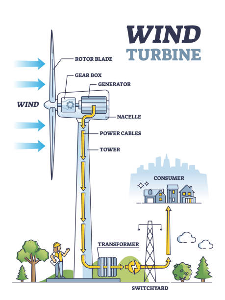

Hydropower utilises the traditional physics concept of energy transformation. At the top of its journey, the water possesses a large amount of gravitational potential energy due to its height and mass (E = mgh). Potential energy is defined as the stored energy held by matter due to its position relative to the other parts of a system. As the water travels downwards, the potential energy of the water becomes converted into kinetic energy (E = mv^2) as a result of its increase in velocity and decrease in height. Finally, the water is passed through turbines which power an electrical generator, ultimately converting its kinetic energy into electrical energy. This is a similar process to wind power as the kinetic energy of the water molecules must be used to optimise rotations of the water turbines and hence the amount of electrical energy produced. The electrical energy can be stored and used as electricity both domestically and commercially as required. Hydropower is similar to tidal power in which turbines are placed at on the ocean floor and the predictable movement of the water with the tide causes the turbines to spin, thus producing electricity. Hydropower is the most popular form of renewable energy production as it makes up 71% of the world's renewable electricity. All hydropower plants must have a reservoir of water, a gate or valve to control the flow of water out of the reservoir and an outlet where the water ends up. There are three types of hydropower plants including an impoundment facility, diversion facility and pumped storage facility. An impoundment facility is the most common and involves the use of a dam to control the flow of water out of a reservoir. This enables the amount of energy produced to match demand as the amount of water being passed through the dam can be easily changed. A diversion facility instead uses a network of canals to channel flowing river water towards the generator powering turbines. Finally, a pumped storage facility stores energy by pumping water uphill from a reservoir at a lower elevation to one located at a higher elevation. This water can then be released when there is high energy demand.
Wind Power
What is wind power and why is it so important?
Wind power is based on the concept of aerodynamics as the wind turbines must be designed to optimise rotation due to movement in the air acting in any direction. This also follows the concept of energy transformation as the kinetic energy from the air molecules in the atmosphere must be used to turn the blades of a wind turbine. The blades are attached to a rotor which spins a generator in order to create electricity. Engineers are therefore concerned with utilising the kinetic energy of the air molecules in wind must be harnessed in such a way that it maximised the kinetic energy of the blades. This can be achieved by minimising the aerodynamics of the blades so that their movement is maximised. The kinetic energy is converted into electrical energy which can be stored and used as needed. This is extremely important and fundamental to the production of energy for both domestic and commercial use. There are two types of wind turbines. Horizontal-axis wind turbines (HAWTs) are the most common and usually consist of two or three long thin blades that face directly into the wind and resemble an aeroplane propeller. Vertical-axis wind turbines (VAWTs) have shorter, wider curved blades that resemble the beaters used in an electric mixer. Wind turbines are intuitively placed in destinations of high natural winds such as mountain ranges or even offshore in the sea in order to maximise energy production. When a group of wind turbines are placed together it is known as a wind farm. A transformer is a device used for stepping up (increasing) the voltage of a current supply so that the electricity can be transported whilst minimising energy loss to heat, sound and light due to friction within the cable and the surrounding. When the electricity reaches the consumers, the voltage can then be stepped down (decreased) so that it is safe to use as high voltages pose a serious threat to the safety and would damage common household electrical appliances.

Solar Power
What is solar power and why is it so important?
Solar power is based on modern physics principles related to the photoelectric effect. The photoelectric effect occurs when the light of a minimum threshold frequency is shone onto a metal surface. Since E = hf, the frequency of the incident light is proportional to the energy of the photons. The photons must therefore possess a minimum amount of energy in order to transfer sufficient energy to the electrons in the orbitals of the atoms on the surface of the metal. This enables them to overcome the attractive binding forces to the nucleus of the atoms and become liberated from the surface of the metal. Within solar panels, the sophisticated metal surface exposed to direct sunlight is the anode and the voltaic system can be modelled via the simple circuit diagram shown below. When incident photons above a certain threshold frequency are shone onto the anode (surface of the voltaic cell), electrons are released. These electrons travel away from the negatively charged anode and towards the positively charged cathode. The electrons can then flow around the circuit where they pass through a resistor to control the size of the current (Ohm's law, V = IR) and onto the charged plates of the capacitor where they can be stored securely until their electricity is needed. However, the capacitor can only hold a maximum amount of charge and so the energy must be discharged frequently in order to maximise energy production.
Geothermal Energy
What is geothermal power and why is it so important?
Geothermal energy is created from the heat produced deep beneath the crust of the earth, towards the earth's core. This energy was generated during the initial formation of the planet as well as from the radioactive decay of materials and is stored within rocks and fluids at the centre of the earth. Geothermal energy is extracted from the crust of the earth via geysers, hot springs, underwater hydrothermal vents and mud pots. These natural phenomena are created by magma heating nearby rocks and underground aquifers, causing hot water to be released. Their heat can be captured and used directly for heat or, more commonly, their steam can be used to generate electricity. Most of the earth's geothermal energy is stored as pockets of dry geothermal heat which can be extracted by drilling into the earth's crust and injecting water to create steam. These pockets of dry heat can be accurately located by a geologist by studying rock formations in the immediate environment which relates to core activity.
Biomass Energy
What is biomass power and why is it so important?
Biomass energy is generated by burning organic materials such as wood and wood residues, energy crops, agricultural residues and waste from industry, farms and households. Biomass contains energy first derived from the sun as plants absorb the sun's energy through photosynthesis and use it to convert carbon dioxide and water into the nutrients required to complete their essential life processes. The energy from these organisms can be burned to produce heat or converted into electricity. Plants such as corn and soy are the most common form of biomass materials. Thermal conversion involves the heating of biomass feedstock in order to burn, dehydrate or stabilise it. Different types of energy can be created from biomass through the processes of direct firing, co-firing, pyrolysis, gasification and anaerobic decomposition.
Nuclear Energy
What is nuclear power and why is it so important?
Nuclear energy has stemmed from the modern physics concept of nuclear reactions involving both fission and fusion reactions. Fission reactions occur when an accelerated proton collides with a large nucleus, causing it to split up into smaller nuclei. Fusion reactions are the reverse process in which small nuclei collide under conditions of immense heat and pressure to form a larger nucleus. Nuclei are made up of nucleons which consist of protons and neutrons, held together by a strong interactive force. The strong force is about 126 times the strength of the electrostatic repulsion forces between the positively charged protons, however, is extremely short ranged with a range approximately equal to the diameter of a nucleus. The vast majority of energy from nuclear power plants is produced from the nuclear fission reactions of uranium and plutonium. During the creation of the universe, all of the elements known to mankind except hydrogen which is the most basic element, consisting of just one proton and one electron, were formed during nuclear fusion reaction within stars. As stars burn, they produce extremely large amounts of energy which facilitates the energy required for fusion reactions to take place. This therefore causes the elements to fuse together and form larger more complex elements consisting of more nucleons with a higher atomic number.